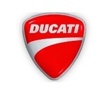

홈 > 브랜드 매거진 > 두카티
두카티
두카티(Ducati)는 이탈리아 볼로냐에 본사를 둔 고성능 오토바이 제조 브랜드이다.
산업 분야 모빌리티 · 공개 등급 편집 검수 · 브랜드 평가 4.7 ★


한눈에 보는 브랜드
두카티(Ducati)는 1926년 두카티 가문이 라디오 부품 회사로 설립했고 1946년 오토바이 사업에 진입했다. 2012년 아우디 자회사 람보르기니가 인수해 폭스바겐 그룹 산하 브랜드가 됐으며 데스모드로믹 엔진과 레이싱으로 유명하다.
브랜드 관점
두카티 항목은 단순한 이름 목록이 아니라 모빌리티 시장 안에서 어떤 역할을 하는지 읽기 위한 기준점입니다. 제품·서비스 범위, 유통 방식, 시각 아이덴티티, 시장 포지션을 함께 비교하면 같은 산업의 다른 브랜드와 차이가 선명해집니다.
시작과 성장
1926년 이탈리아 볼로냐에서 라디오 부품사로 출발해 1946년 오토바이를 시작한 브랜드로, 현재 폭스바겐 그룹 소속이다.
브랜드 아이덴티티
데스모드로믹 엔진과 레이싱 유산으로 대표되는 이탈리아 프리미엄 모터사이클이다.
제품과 서비스
모터사이클, Ducati Scrambler
현재 상태
타임라인
BI/CI 변천사
함께 읽을 브랜드
 모빌리티 · 편집 검수아우디
모빌리티 · 편집 검수아우디아우디(Audi)는 독일 잉골슈타트에 본사를 둔 폭스바겐 그룹 산하 프리미엄 자동차 제조사이다.
 모빌리티 · 편집 검수볼보
모빌리티 · 편집 검수볼보볼보(Volvo)는 1927년 스웨덴 예테보리에서 출발한 자동차 브랜드로, 승용차(볼보 자동차)와 상용차(볼보 그룹)로 분리돼 있다.
메르세데스-벤츠(Mercedes-Benz)는 독일 슈투트가르트에 본사를 둔 프리미엄 자동차 브랜드이다.
Mo
Mobil
모빌리티 · 편집 검수MobilMobil는 1966년에 기록된 Energy 계열의 브랜드 아이덴티티 사례입니다. Chermayeff & Geismar가 아이덴티티 작업의 디자이너로 기록되어 있습니...
 모빌리티 · 자료 기반제네시스
모빌리티 · 자료 기반제네시스제네시스(Genesis)는 현대자동차그룹이 2015년 출범시킨 럭셔리 자동차 브랜드다.
 모빌리티 · 편집 검수페라리
모빌리티 · 편집 검수페라리페라리(Ferrari)는 이탈리아 마라넬로에 본사를 둔 럭셔리 스포츠카 제조사이다.
El
Elf
모빌리티 · 편집 검수ElfElf는 1966년에 기록된 Energy 계열의 브랜드 아이덴티티 사례입니다. Jean-Roger Rioux, Signe & Fonction가 아이덴티티 작업의 디자...
PA
PAM
모빌리티 · 편집 검수PAMPAM는 1965년에 기록된 Energy 계열의 브랜드 아이덴티티 사례입니다. Total Design, Benno Wissing, George Koizumi, Pie...